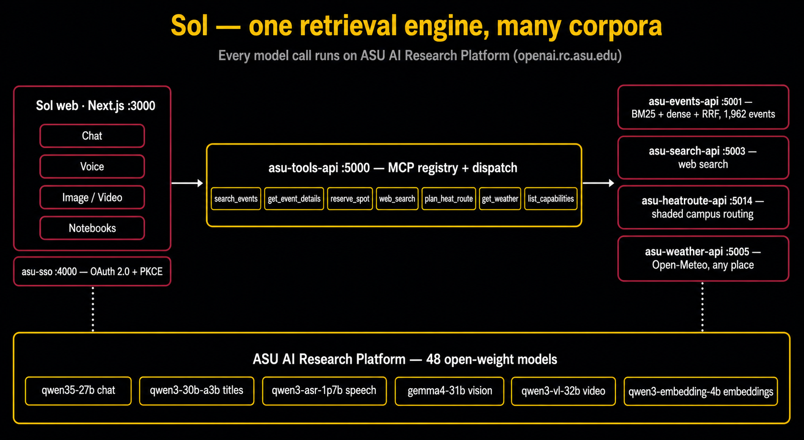

ASU AI Research Platform Spark Challenge · Team InnovatAIRs
Sol.
An AI campus compass — built entirely on ASU's AI Research Platform.
ASU AI Research Platform Spark Challenge · Team InnovatAIRs
An AI campus compass — built entirely on ASU's AI Research Platform.
The problem
The idea
Sol turns any firehose of unstructured ASU information into something a student can search, understand, and act on — powered entirely by ASU's AI Research Platform.
Demo 1 — events
Vision reads the flyer, hybrid BM25 + embedding search matches it against the live feed, and one tool-calling loop handles the failure case live, on camera.
Demo 2 — HeatRoute
Ask a normal question — Sol decides on its own that the answer needs a walking-route tool, calls it, and folds the plan back into the conversation.
Demo 3 — notebooks
Upload page photos in order. Sol OCRs each one, keeps a running digest as it goes, then answers questions from the digest plus the raw pages — citing the page it came from. Ships behind an admin feature switch, off by default.
0ⁿ1ⁿ is regular p.20ⁿ1ⁿ returns as a context-free grammar p.3How it fits together

Built entirely on ASU AIR
| Model | Does | Latency |
|---|---|---|
| qwen35-27b | Chat & reasoning — beat a 120B model on speed and quality | 1.7s |
| qwen3-vl-32b-instruct | Notebook page OCR — and video | 5–12s |
| gemma4-31b-it | Vision — reads a flyer photo | 1.8s |
| qwen3-embedding-4b | Hybrid retrieval over the events corpus | 278ms |
| qwen3-coder-30b | Agentic coding on AIR — service code written through opencode | build‑time |
Team InnovatAIRs
Give Sol a wider corpus and a real cohort — the engine is corpus-agnostic already.